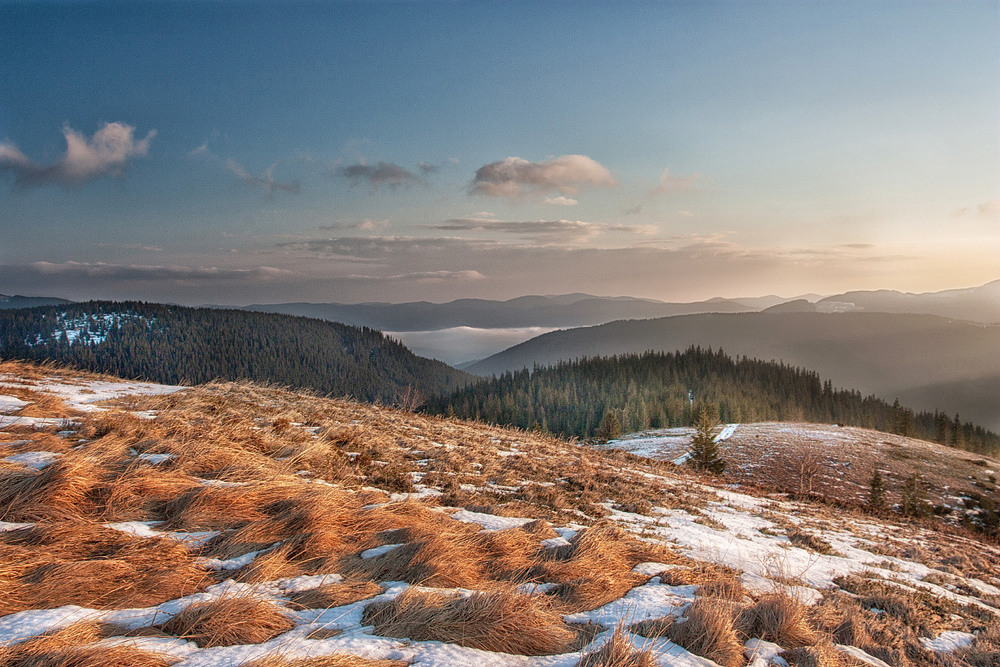
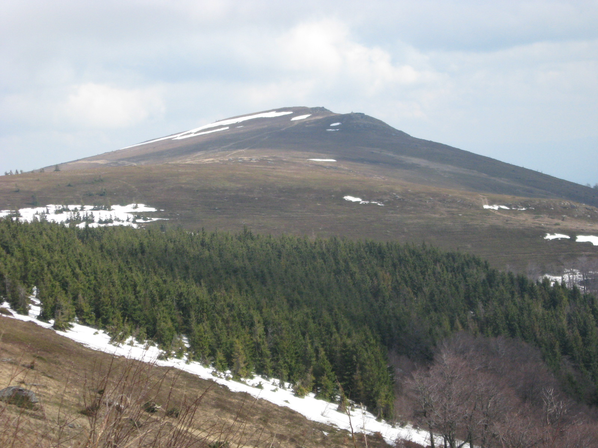
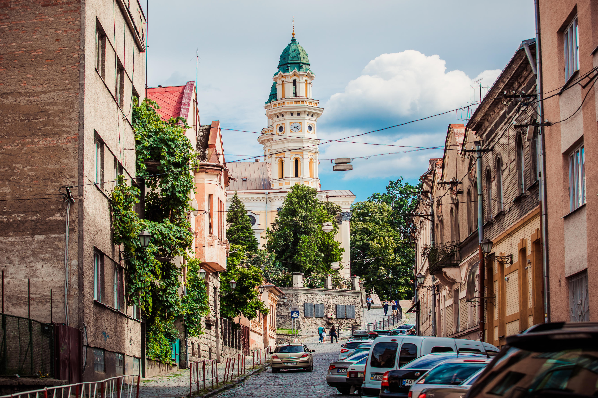
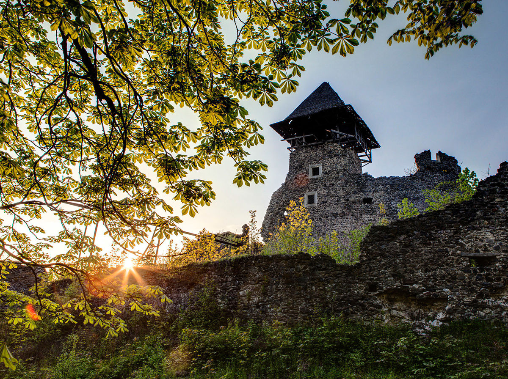
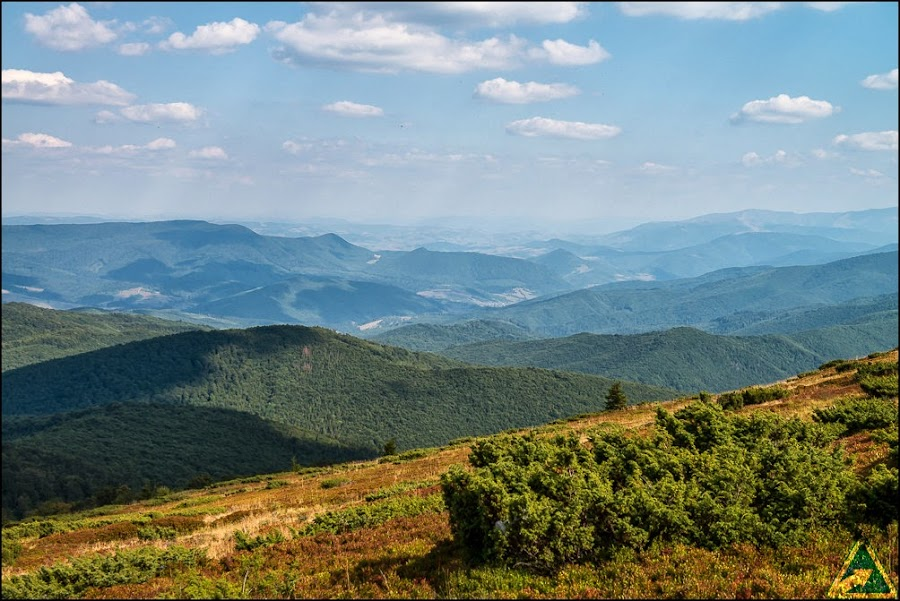
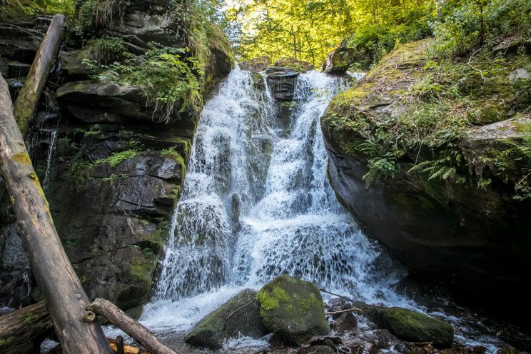

«Полонина Руна»

Характеристика:
Маршрут:
Ужгород - Невицкий замок - полонина Руна - водопад Воеводин.
Довжина:
50 км.
Тривалість:
6 годин.
Складність:
якщо Ви з байком на "ти", Ваш рівень фізичної підготовки вищий за середній, вибирайте цей
маршрут.

Опис:
Полонина Руна - високогірне карпатське
плато, з обох боків оточене річками Латориця та Уж. Ландшафти цих місць – це типові зразки
альпійських лук. Рослинний світ долини вражає. Головною родзинкою полонини Руна є водоспад
Воєводін. Саме тут можна на власні очі побачити церкву, зібрану без жодного цвяха, та житлові
будинки лемків, бойків та гуцулів. Цікаво також вивчити руїни Невицького замку та покинуту
військову частину.

Ужгород
У́жгород — місто на річці Уж в Закарпатській області України, центр Ужгородської міської
громади та Ужгородського району.
Цікаві місця:
● Ужгородський замок
● Кафедральний греко-католицький собор
● Хоральна синагога
● Пішохідний міст через Уж
● Центр Ужгорода з боку моста Масарика
● Ужгородський замок
● Кафедральний греко-католицький собор
● Хоральна синагога
● Пішохідний міст через Уж
● Центр Ужгорода з боку моста Масарика

Невицкий замок
Не́вицький замок — напівзруйнований замок біля села Кам'яниця Ужгородського району
Закарпатської області, пам'ятка архітектури національного значення.
Замок уперше згадується на початку XIV ст. як опорна база місцевого феодального бунту проти
королівської влади Карла Роберта Анжу. У XIV ст. замок переходить до володінь роду графів
Другетів, які будують на місці дерев'яного замку кам'яний. У 1644 році під час релігійних
воєн трансільванський князь Юрій I Ракоці зруйнував замок.

Полонина Руна
Полонина-Руна, Полони́на Рівна (Руна — закарпатський діалектом значить «рівна») — гірський
масив в Українських Карпатах, у межах Перечинського та (частково) Великоберезнянського
районів Закарпатської області.
Висота до 1482 м (за іншими джерелами — 1479 м). Полонина Рівна — це широкий лагідний хребет,
вкритий полонинами та переважно буковими лісами (на схилах). Стрімко спадає на північ та
схід. Масив має кілька помітних вершин, наприклад, гора Полонина Руна (1479 м, у
північно-західній частині масиву), Менчул (1295 м, у південній частині), Руна-Плай (1227 м, у
південно-східній частині).
На Рівній розташовані: орнітологічний заказник «Соколові Скелі» та гідрологічна пам'ятка
природи «Льодовикове озеро Велике Тростя», на південно-східних схилах — Тур'є-Полянський
заказник і водоспад Воєводин, на північно-західних — Лумшорські водоспади.

Водопад Воеводин
Ши́піт, Ши́пот, Воєво́дин — водоспад в Українських Карпатах, в межах Перечинського району
Закарпатської області, за 12 км на північ від села Тур'я Поляна. Гідрологічна пам'ятка
природи місцевого значення.
Водоспад утворився на місці виходу стійких до розмиву пісковиків палеогенового періоду у
річищі потоку Воєводин, притоки Шипоту (притока Тур'ї, басейн Тиси), на південно-західних
схилах Полонини-Руни.
Вода каскаду спадає з висоти до 24 м двома окремими потоками. Висота головного каскаду 5—6 м. Припускають, що цей водоспад утворився внаслідок землетрусу, під час якого в гірській породі поперек вузької глибокої долини виникла тріщина.
Вода каскаду спадає з висоти до 24 м двома окремими потоками. Висота головного каскаду 5—6 м. Припускають, що цей водоспад утворився внаслідок землетрусу, під час якого в гірській породі поперек вузької глибокої долини виникла тріщина.
Маршрут на мапі: